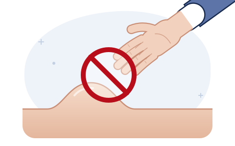
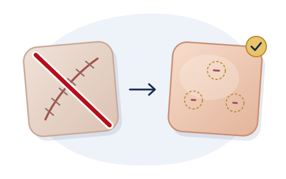

Признаки
Боль и видимое выпячивание в паху. Паховая грыжа чаще встречается у мужчин, но бывает и у женщин.

Лапароскопическая герниопластика
Лапароскопическое устранение всех видов грыж: паховых, пупочных, послеоперационных. Оперирует профессор Орал Оспанов, доктор медицинских наук.
Истории пациентов в InstagramПоказания
При паховой грыже операция показана во всех случаях. Если грыжа ничем себя не проявляет, это не значит, что она не может ущемиться.

Боль и видимое выпячивание в паху. Паховая грыжа чаще встречается у мужчин, но бывает и у женщин.

Требует экстренной операции. Без неё развиваются некроз ущемлённого органа или воспаление брюшной полости.

Самостоятельное вправление ущемлённой грыжи может закончиться летальным исходом.
Операция
Операцию выполняют через проколы живота с установкой сетчатого трансплантата.
Один 1 см в области пупка и два по 5 мм по боковым отделам живота.
Закрывает изнутри грыжевой дефект и другие слабые места паховой и бедренной областей, защищая их от образования грыж.
При двусторонней паховой грыже пластика выполняется одномоментно.

Преимущества

Собственные ткани не смещаются и не натягиваются, поэтому операция проходит бескровно и с меньшей болью.
Быстрое восстановление: через месяц после операции ограничений в физической нагрузке нет.

Биоинертные сетчатые трансплантаты и рассасывающиеся фиксаторы снижают риск сером, спаек и рецидива.
Оставьте заявку - менеджер центра свяжется с вами, ответит на вопросы и согласует время консультации.